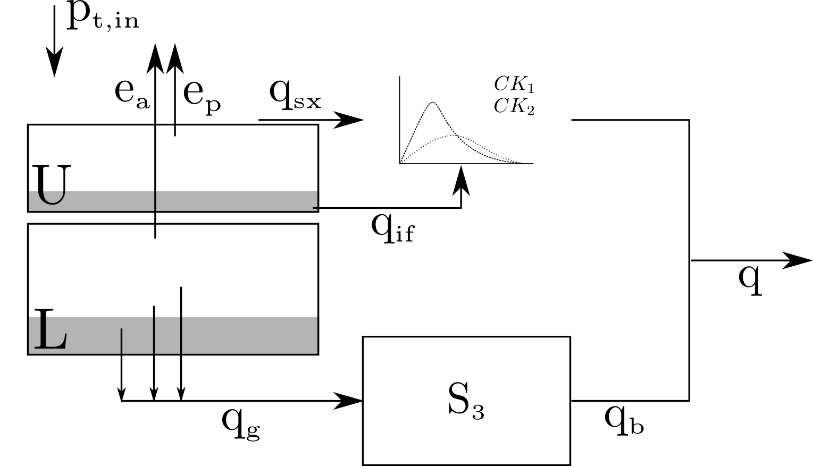
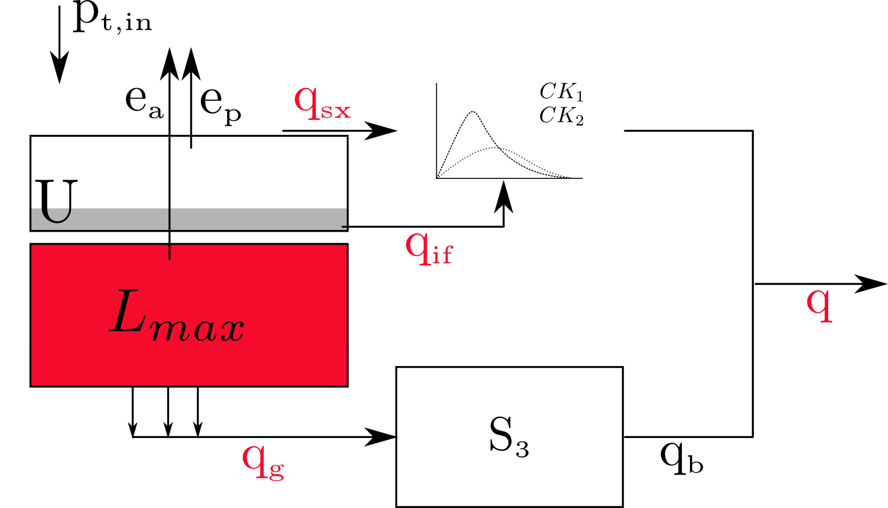
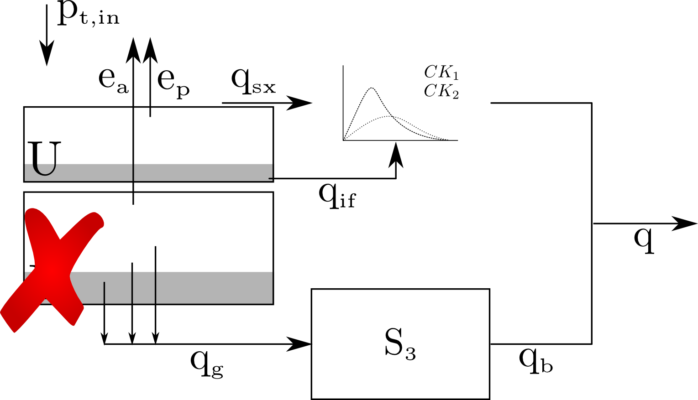

Development and application of a framework for model structure evaluation in environmental modelling
Stijn Van Hoey
Supervised by
Piet Seuntjens
Ingmar Nopens


Gent
1 July, 2016
1 July, 2016

a collaboration between
Flemish institute
Flemish institute
for Technological Research
https://vito.be
and
Department of Mathematical Modelling,
Department of Mathematical Modelling,
Statistics and Bioinformatics
http://biomath.ugent.be/
{kind=link}
Credits: Clement Windey
{kind=link}
Predict
Predict
What if?

What if?


Contradiction
- heterogeneous nature
- uniqueness of place
- diversity of
research questions
- changing availability
of data
reusing of
off the shelf
models
In literature

Central problem statement:
“The identification of the most appropriate model structure for a given problem remains an outstanding research challenge”
Problem 1: flexibility
Individual flexibility of each of these models limited
Problem 2: Difficult to compare
Lack of transparency of the implementation
Problem 2: Difficult to compare
Hard to identify the effect of individual model components
How can we transparently communicate
about the chosen model structure?
- Providing maximal flexibility
- Independent from technology
(software environment)?
A well-known concept within the
wastewater modelling community
Summary of mathematical model
in single table representation
The building blocks

- reservoirs
- joints/splits
- lag functions
- constitutive functions
Take home message:
Model matrix representation:
Flexibility while keeping maximal transparency
Flexibility while keeping maximal transparency
Implementation does matter!
Objectives:
- Provide algorithm implementations (pystran)
- Adapt and improve existing methods
DYnamic Identifiability Analysis (Dynia)
DYnamic Identifiability Analysis:
Allow parameters to change in timeto improve the fit
to identify model deficiencies
Interpretation

Application NAM model
Application NAM model
Focus on maximal storage parameter $L_{max}$
Parameter shift compensates for deficiency in model structure
NAM model storage deficiency

...for this system and with the available data!
Take home message:
Dynamic parameter variations provides information about model structure failures.
Learning by failure!
Thank you.
|
|